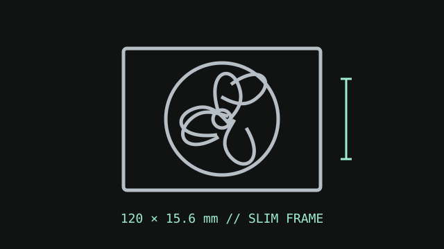

[ IDENTIFIED SKU // SST-AS120B ]
SilverStone Air Slimmer 120
A thin 120 mm PWM fan whose 15.6 mm frame depth differs materially from a standard 25 mm fan. Measure the mount before ordering or installation.

Exact identity: SilverStone SST-AS120B (Air Slimmer 120). This record is for the slim black 120 mm fan, not a 25 mm fan sharing its nominal width.
Specifications
| Frame | 120 × 120 × 15.6 mm |
|---|---|
| Speed / airflow / pressure / noise | 0–1800 RPM; up to 63.67 CFM; 2.4 mm H₂O; up to 31.7 dB(A). |
| Bearing | All-copper Fluid Dynamic Bearing |
| Connector / control | 4-pin fan connector; PWM control. |
| Electrical | 12 V DC rated; 0.32 A ±0.04 A rated current; 3.84 W rated power. |
| Fit and host compatibility | 120 mm square hole pattern with 15.6 mm fan depth. Use only where the case/radiator permits this exact slim fan thickness and compatible screws; verify cable and fitting clearance. |
Installation
Confirm that the mounting surface accepts a 120 mm square frame and that a 15.6 mm fan does not conflict with panels or brackets. SilverStone lists cable lengths by hardware version; check the supplied version and route before closing the case.
Manufacturer sources
- SilverStone — Air Slimmer 120 product pageProduct identification, dimensions, and feature overview.
- SilverStone — AS120 official product sheetModel-specific performance, electrical values, connector, and fan size.